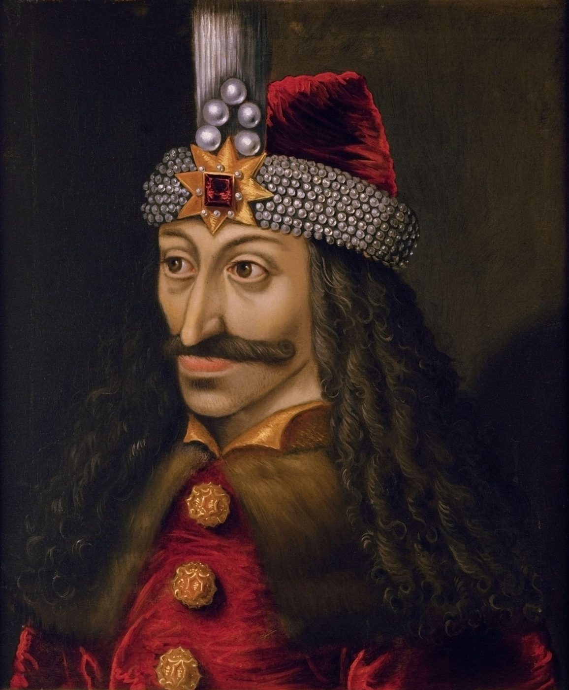
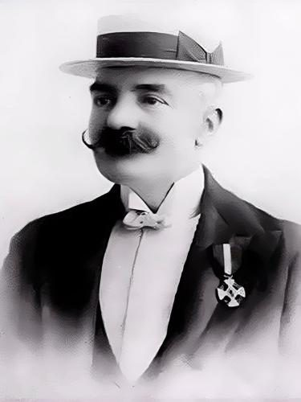

The PacificaRomania archive is rooted in the liminal spaces where ancient animism intersects with the cinematic mythologies of the twentieth century. The globalised tourist icon — whether the Gothic castle of Transylvania or the exoticised jungles of the Malay Archipelago — is often a sanitised refraction of a much darker indigenous eschatology. Here we juxtapose the European cinematic vampire with the Southeast Asian were-tiger, anchored by the Mah Meri sculpture of the Tiger in Chains, carved on Carey Island, Selangor.
Blood-soaked genealogies
To grasp the linkage we must first deconstruct the blood-soaked genealogies of royalty that underpin both narratives. The British Crown shares a distant bloodline kinship with the historical tyrant Vlad Țepeș — Vlad the Impaler. Genealogists trace King Charles III’s descent from Vlad III through Queen Mary of Teck, consort of George V; Charles himself acknowledged the connection on television in 2011, and has been invited to accept the honorary style of Prince of Transylvania. The Empire that sanitised its own imperial brutality abroad consumed, at home, the exploits of a distant relative through the lens of fiction.
The celluloid count
Bram Stoker’s Dracula (1897) passed the censors of Victorian Britain by projecting the anxieties of parasitic imperialism onto a Gothic Eastern European prince. It transformed the flesh-impaling, nationalist voivode into a universal, vampiric archetype — a branding that has since turned the Romanian Carpathians into a global “Dracula trail,” effectively erasing the historical Wallachian ruler to make room for the celluloid count.

The Fanged King and the First Minister
Eleven thousand kilometres east, a parallel resuscitation befell the royal house of Kedah. Tunku Abdul Rahman Putra Al-Haj, first Prime Minister of the Federation of Malaya, was a direct descendant of a dynasty that traces its mythical origins to the kings of the Hikayat Merong Mahawangsa. One of them was Raja Bersiong, the Fanged King.
In 1968 the Tunku took command of the story himself, writing the screenplay for the film Raja Bersiong — produced at some ten times the cost of an average Malaysian film, and the first Malay picture shot in colour CinemaScope. In his telling the king is innocent, the victim of a slanderous palace coup: the blood on his lips is only the juice of dragon fruit and pomegranate, the fangs mere propaganda. The message to a nascent post-colonial nation was plain — do not believe the whispers of traitors against a benevolent monarchy.
Apotheosis in the jungle
Yet the film is a deliberate departure from the folklore. In the pre-colonial Hikayat the tale ends not in exoneration but in apotheosis and transmutation. The king’s appetite for human blood grows until he sprouts fangs and preys upon his own people; horrified, they rise and drive him into the deep jungle, where, cursed for his transgression against the natural and social order, Raja Bersiong is changed permanently into a Harimau Bersiong, a Fanged Tiger. He is no longer a monarch but a creature of the wild, haunting forever the rainforest boundary he once ruled.
The Harimau Jadi, keeper of the boundary
This violent ending aligns with the animist cosmology of the Orang Asli, the First Peoples of the Malay Peninsula. In Mah Meri and wider belief the transformation of a human into a tiger — the Harimau Jadi — is not an escape from justice but its embodiment. When a person commits an egregious violation, above all murder or cannibalism, the forest spirits strip away the social soul and imprison the offender in a tiger’s body. There they become the eternal guardians of the jungle, the fanged boundary-keepers who defend the wilderness against human encroachment.
Global cinema, through Emilio Salgari’s swashbuckling serials, branded the region with the iconic “Sandokan, the Tiger of Malaysia” — a pirate-saviour entirely divorced from the spiritual ferocity of the indigenous jungle guardian. Salgari, who never visited the archipelago, seems to have drawn his hero from the Bornean rebel-prince Syarif Osman, and the name is popularly tied to Sandakan Bay in Sabah.

The Tiger in Chains
Against this backdrop of commercial branding, royal cinema and indigenous reality stands a cornerstone of the collection: the Tiger in Chains (Moyang Harimau Berantai), carved by the Mah Meri of Pulau Carey and awarded the UNESCO Seal of Excellence for Handicraft Products in South-East Asia in 2004. Ambiguously humanoid in its stance, the archetypal tiger is bound in heavy iron shackles.
The chained tiger is an audacious reversal of the Bersiong myth. Where the king was freed by his transformation to prowl the jungle as a supreme predator, the Mah Meri’s tiger is immobilised. The chains are not allegory for royal slander; they are stark markers of the devastation wrought by palm-oil monocropping and forced displacement — the silencing of the Orang Asli’s ancestral voice and the felling of the very forests the Harimau Jadi exists to protect. Recognised by UNESCO, the sculpture becomes a diplomatic barometer of the global struggle to preserve intangible heritage and ecological biodiversity.
Conclusion: sovereign mirrors
The Wallachian Vlad and the Kedahan Bersiong are sovereign mirrors of political expediency. The cinematic vampire kept Romania’s historical brutality safely exoticised for a Victorian audience while cementing a twentieth-century tourist identity; the cinematic Malay king, exonerated by his own descendant, was engineered to shield a fragile federation from sedition. Beneath the projectors, the Mah Meri carve the truest myth: the chains that bind the tiger are not legends of slander but the real chains of deforestation and cultural erasure. The beast that once transformed to protect the jungle now needs us to unchain the jungle to protect the beast.
Arhiva PacificaRomania este înrădăcinată în spațiile liminale unde animismul străvechi se intersectează cu mitologiile cinematografice ale secolului al XX-lea. Icoana turistică globalizată — fie castelul gotic al Transilvaniei, fie junglele exotizate ale Arhipelagului Malaez — este adesea o refracție igienizată a unei eshatologii indigene mult mai întunecate. Aici juxtapunem vampirul cinematografic european cu tigrul-om din Asia de Sud-Est, ancorați de sculptura Mah Meri a Tigrului în lanțuri, cioplită pe Insula Carey, Selangor.
Genealogii însângerate
Pentru a înțelege legătura, trebuie mai întâi să deconstruim genealogiile însângerate ale regalității care stau la baza ambelor narațiuni. Coroana britanică împărtășește o înrudire de sânge, îndepărtată, cu tiranul istoric Vlad Țepeș. Genealogiștii urmăresc descendența Regelui Charles al III-lea din Vlad al III-lea prin Regina Mary de Teck, consoarta lui George al V-lea; Charles însuși a recunoscut această legătură la televiziune în 2011 și a fost invitat să accepte titlul onorific de Principe al Transilvaniei. Imperiul care își igieniza propria brutalitate imperială peste hotare consuma, acasă, isprăvile unei rude îndepărtate prin lentila ficțiunii.
Contele de celuloid
Romanul Dracula (1897) al lui Bram Stoker a trecut de cenzorii Marii Britanii victoriene proiectând angoasele imperialismului parazitar asupra unui principe gotic est-european. A transformat voievodul naționalist, care trăgea în țeapă, într-un arhetip vampiric universal — o marcă ce a preschimbat de atunci Carpații românești într-un „traseu Dracula” global, ștergând efectiv voievodul valah istoric pentru a face loc contelui de celuloid.
Regele Colțat și Primul Ministru
La unsprezece mii de kilometri spre răsărit, o resuscitare paralelă a atins casa regală a Kedahului. Tunku Abdul Rahman Putra Al-Haj, primul prim-ministru al Federației Malaya, era descendent direct al unei dinastii ale cărei origini mitice se leagă de regii din Hikayat Merong Mahawangsa. Unul dintre ei era Raja Bersiong, Regele Colțat.
În 1968, Tunku a preluat el însuși controlul poveștii, scriind scenariul filmului Raja Bersiong — produs cu un cost de aproape zece ori mai mare decât al unui film malaez obișnuit și primul film malaez turnat în color CinemaScope. În versiunea sa, regele este nevinovat, victima unei lovituri de palat calomnioase: sângele de pe buzele lui este doar zeama fructului de dragon și a rodiei, colții — simplă propagandă. Mesajul pentru o națiune post-colonială abia născută era limpede — nu credeți șoaptele trădătorilor împotriva unei monarhii binevoitoare.
Apoteoză în junglă
Și totuși filmul este o abatere deliberată de la folclor. În Hikayat-ul pre-colonial, povestea nu se încheie cu dezvinovățire, ci cu apoteoză și transmutare. Pofta regelui de sânge omenesc crește până când îi cresc colți și își vânează propriul popor; îngroziți, oamenii se ridică și îl gonesc în jungla adâncă, unde, blestemat pentru încălcarea ordinii naturale și sociale, Raja Bersiong este preschimbat definitiv într-un Harimau Bersiong, un Tigru Colțat. Nu mai este monarh, ci o creatură a sălbăticiei, bântuind pentru totdeauna hotarul de pădure pe care cândva l-a stăpânit.
Harimau Jadi, păzitorul hotarului
Acest final violent se potrivește cu cosmologia animistă a poporului Orang Asli, Primii Oameni ai Peninsulei Malaeze. În credința Mah Meri și în cea mai largă, transformarea unui om în tigru — Harimau Jadi — nu este o scăpare de justiție, ci întruparea ei. Când cineva săvârșește o încălcare gravă, mai ales crimă sau canibalism, spiritele pădurii îi smulg sufletul social și îl întemnițează în trupul unui tigru. Acolo devin păzitorii veșnici ai junglei, străjerii colțați ai hotarului care apără sălbăticia de intruziunea omului.
Cinematograful global, prin serialele de aventuri ale lui Emilio Salgari, a marcat regiunea cu emblematicul „Sandokan, Tigrul Malaysiei” — un pirat-salvator complet rupt de ferocitatea spirituală a păzitorului indigen al junglei. Salgari, care nu a vizitat niciodată arhipelagul, pare să-și fi inspirat eroul din prințul-rebel bornez Syarif Osman, iar numele este legat popular de Golful Sandakan din Sabah.
Tigrul în lanțuri
Pe acest fundal de marketing comercial, cinema regal și realitate indigenă se ridică o piesă de temelie a colecției: Tigrul în lanțuri (Moyang Harimau Berantai), cioplit de poporul Mah Meri din Pulau Carey și distins cu Sigiliul de Excelență UNESCO pentru Produse Meșteșugărești din Asia de Sud-Est în 2004. Cu o ținută ambiguu umanoidă, tigrul arhetipal este ferecat în cătușe grele de fier.
Tigrul înlănțuit este o răsturnare îndrăzneață a mitului Bersiong. Acolo unde regele era eliberat de transformarea sa, spre a cutreiera jungla ca prădător suprem, tigrul Mah Meri este imobilizat. Lanțurile nu sunt alegorie a calomniei regale; sunt semne crude ale devastării provocate de monocultura de palmier de ulei și de strămutarea forțată — reducerea la tăcere a glasului ancestral Orang Asli și doborârea chiar a pădurilor pe care Harimau Jadi există spre a le proteja. Recunoscută de UNESCO, sculptura devine un barometru diplomatic al luptei globale pentru păstrarea patrimoniului imaterial și a biodiversității.
Concluzie: oglinzi suverane
Vlad valahul și Bersiong kedahanul sunt oglinzi suverane ale oportunismului politic. Vampirul cinematografic a păstrat brutalitatea istorică a României exotizată în siguranță pentru un public victorian, cimentând totodată o identitate turistică a secolului XX; regele malaez cinematografic, dezvinovățit de propriul descendent, a fost croit spre a apăra o federație fragilă de sediție. Sub proiectoare, meșterii Mah Meri cioplesc mitul cel mai adevărat: lanțurile care leagă tigrul nu sunt legende ale calomniei, ci lanțurile reale ale despăduririi și ștergerii culturale. Fiara care s-a transformat cândva spre a ocroti jungla are acum nevoie ca noi să dezlănțuim jungla spre a ocroti fiara.
Notes & sourcesNote și surse
- Royal genealogy. Genealogists trace Charles III’s descent from Vlad III via Queen Mary of Teck; the King acknowledged the connection in a 2011 television programme.
- Dracula tourism. The cinematic brand overshadowed the historical figure, turning the Romanian tourist economy into a franchise built on Stoker’s Dracula and its fictional geography.
- Tunku’s genealogy. Tunku Abdul Rahman was a brother of the Sultan of Kedah, a descendant of the Merong Mahawangsa lineage of the classical Malay texts.
- Tunku’s screenplay. The Tunku wrote the 1968 Raja Bersiong for Shaw Brothers’ Malay Film Productions; costly and a box-office flop, it was the first Malay film in colour CinemaScope. (W. van der Heide, Malaysian Cinema, Asian Film, 2002.)
- The original transmutation. The Hikayat Merong Mahawangsa relates that the Fanged King’s appetite for blood led to revolt and his flight into the jungle as a were-tiger. (Siti Hawa Haji Salleh, 1970; Tan Zi Hao, “Raja Bersiong, or the Fanged King,” 2020.)
- Orang Asli cosmology. The conversion of humans into tigers (harimau jadi) is documented among the Mah Meri and in wider Malay animist belief as a deterrent against social crime.
- Mah Meri sculpture. Moyang Harimau Berantai received the UNESCO Seal of Excellence for Handicraft Products in South-East Asia (2004); carved at the Mah Meri Cultural Village, Pulau Carey.
- Sandokan’s inspiration. Emilio Salgari never travelled to the region; his “Tiger of Malaysia” has been linked to the Bornean rebel-prince Syarif Osman, and the hero’s name is popularly connected to Sandakan Bay in Sabah. Cilisos; read the novel at the Internet Archive.